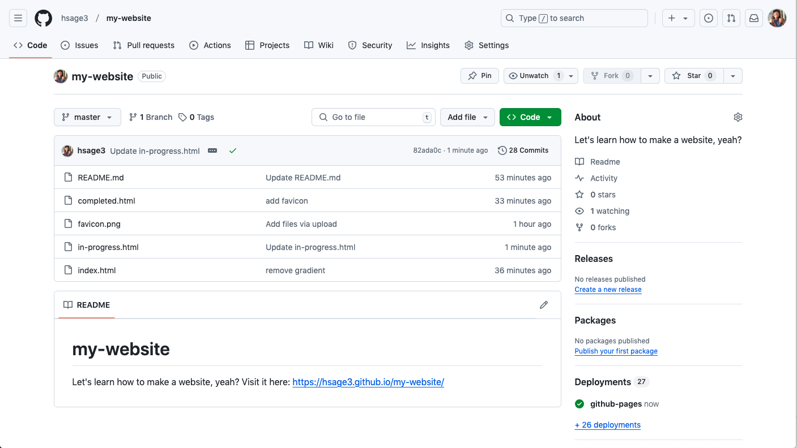

Filter by Tags

This Website!
Why not use ChatGPT to try to make my own website? Been meaning to get better at github too!

Basket Stitch Crochet Blanket!
Started soooo long ago - I think October 2023? Been working in little stints. My cat Hammy tends to claim it as his own!